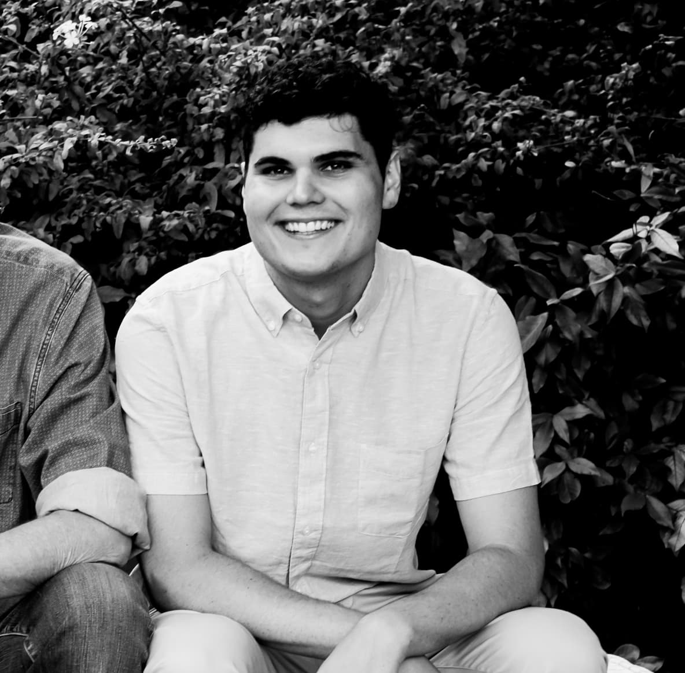

Full-stack software engineer — Cape Town, ZA · GMT+2
I build scalable web systems with the care of a designer.
Currently at Precise Digital, working across React, Next.js, Node and C#/.NET — from financial models to production infrastructure. I came to engineering through years of design, and it still shows in the details.
01 — About

Cape Town · 2026Technical depth, shaped by a design background.
I'm a full-stack engineer based in Cape Town, South Africa. My path ran from high-level graphic design for esports brands into IT engineering and, now, software development — so I think about systems and interfaces in the same breath.
I work comfortably across the stack: C#/.NET and PHP on the back end, modern TypeScript and React on the front, with real experience in Azure DevOps and financial modelling. I like building robust infrastructure that stays pleasant to use.
- TypeScript & React
- Next.js
- Node.js
- C# / ASP.NET
- PHP / Laravel
- Azure & DevOps
- PostgreSQL / SQL
- Tailwind CSS
02 — Experience
-
Software Engineer
Precise Digital — Auckland, NZ (Remote)
Full-stack development focused on scalable web architecture, API integration and DevOps pipelines.
-
IT Engineer & Project Manager
Phelan Green Energy — Cape Town
Managed Azure cloud infrastructure, led agile projects and built financial models. Owned network security, asset management and SharePoint administration.
-
Software Engineer
Bermont Digital — South Africa
Built ASP.NET Web Forms and PHP/Laravel applications. Moved from contract C# developer to full-time engineer.
-
Graphic Designer & Social Manager
White Rabbit Gaming & Goliath Gaming
Led creative direction and social media for major esports organisations — the design foundation everything else is built on.
03 — Selected work
Client Dashboard
A high-performance analytics dashboard for Precise Digital clients — real-time product and performance data, built to stay fast under load.
Private software
Admin Dashboard
Internal management tool for Precise Digital — granular control over users, reporting and statements for the operations team.
Private software
Digital EPC System
An engineering, procurement and construction platform for tracking renewable-energy assets end to end.
Private software